PEPE
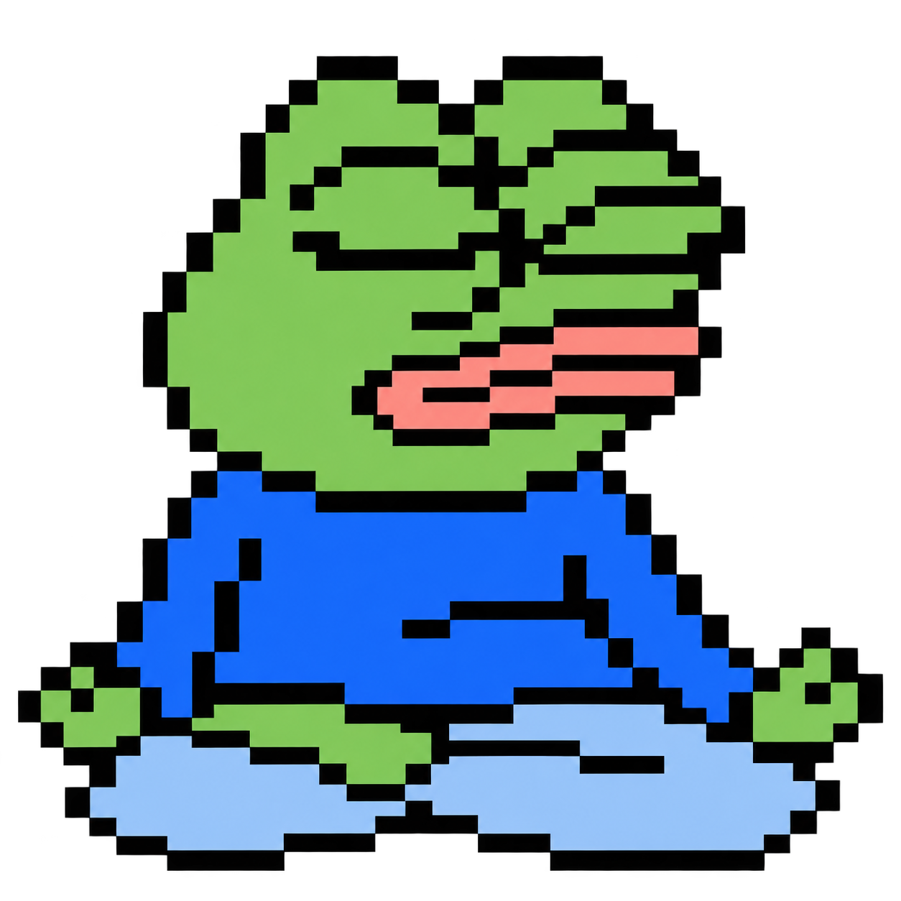
Meditation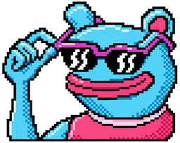
Brett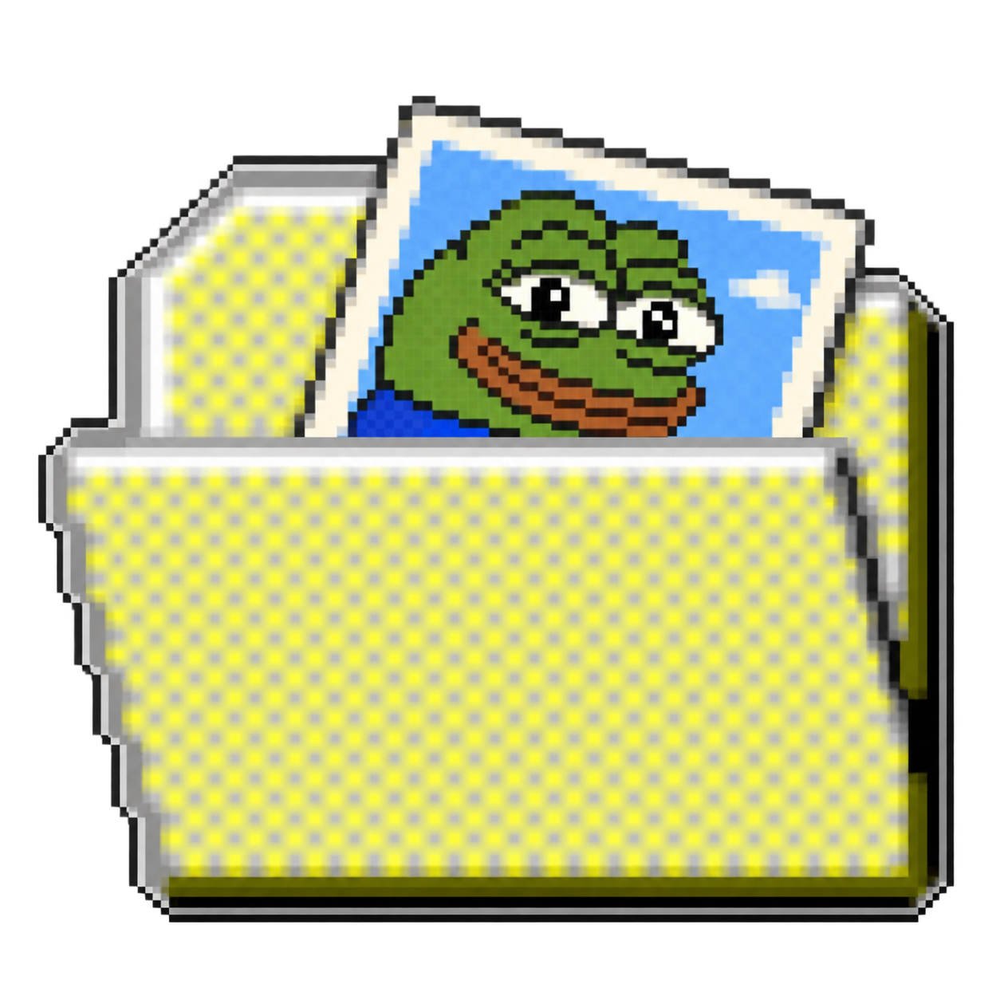
Gallery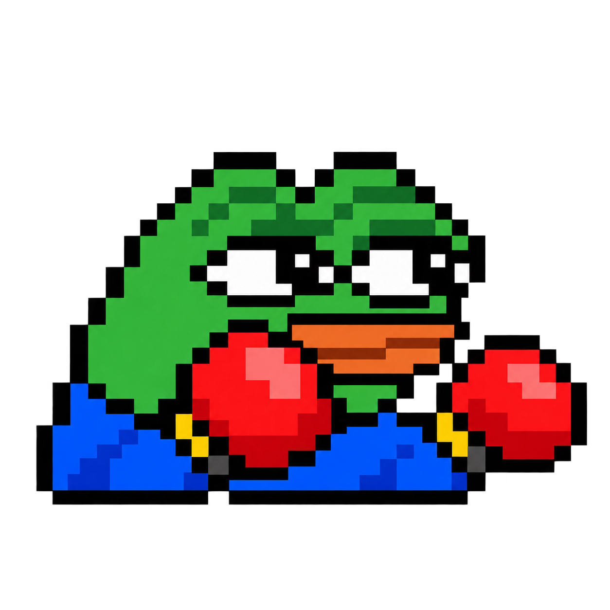
Punch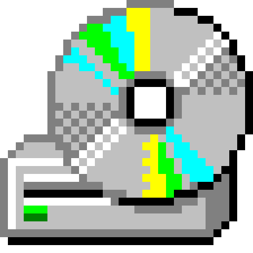
Music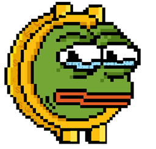
Pepe Coin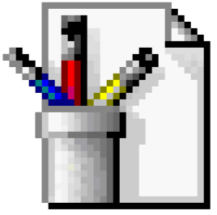
BGpaint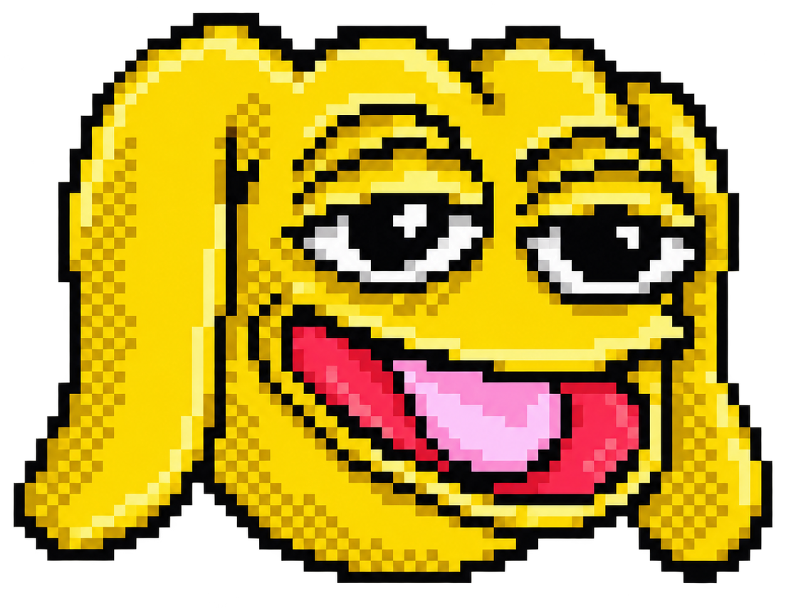
Andy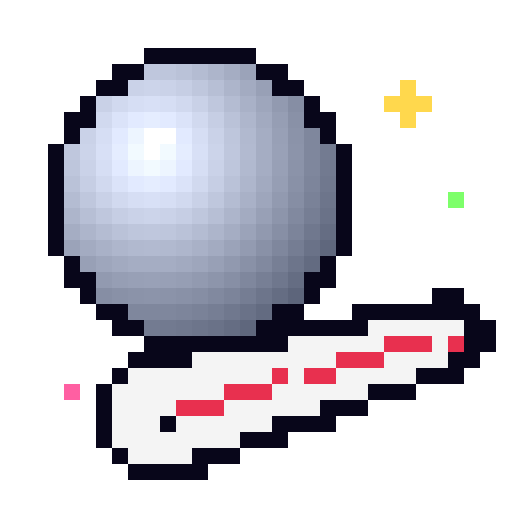
Pinball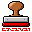
StampExplorer
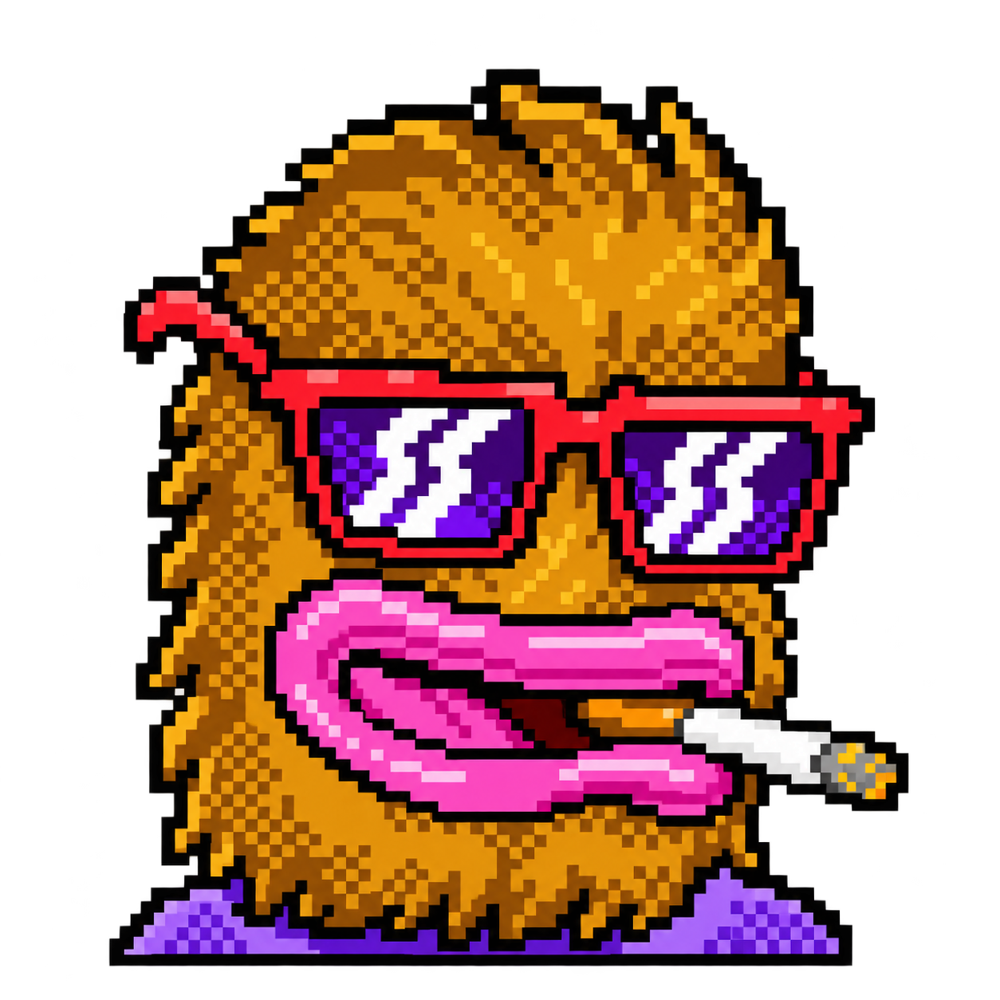
LandwolfWhat is PEPE?
Pepe the Frog is a cartoon character created by American artist Matt Furie in 2005 for his comic series *Boy’s Club*.
With his green face, big eyes, and expressive reactions, Pepe became a popular internet meme used to convey feelings such as happiness, sadness, and frustration.
Over time, online communities adapted Pepe into countless variations.

Although some versions became associated with political and extremist groups, Pepe is also widely used in everyday memes without those meanings.
His significance often depends on the context in which he appears.
This website was created by
and completed on 2026/10/22
It was made as a school project, and you can enjoy a variety of activities with Pepe here.
Thank you for reading!
- pepe.jfif
- evolution of pepe.png
- meditation 1.png
- meditation 2.png
- dance pepe.gif
- dance pepe 2.gif
- dance pepe 3.gif
- brett.png
- brett dance.gif
- andy dance.gif
- landwolf dance.gif
- landwolf smoke.png
- pepe coin.gif
- REEEE.png
- beaten.png
- cry.png
- happy.png
- sad.png
- AurecTheme - Electro Swing
Andy 내용
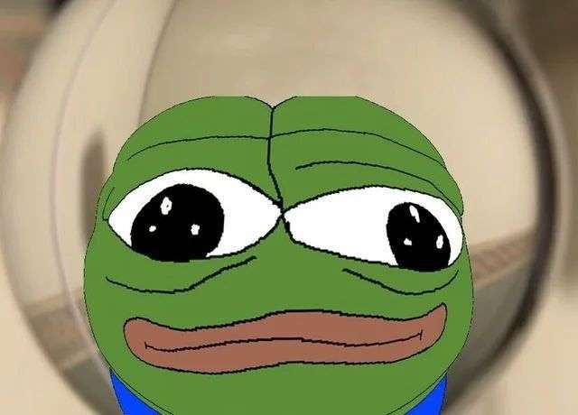
정말 페페를 떠나시겠습니까?
- Meditation
- Music
- Pepe Coin
- Pepe Pinball
 Pepe Explorer
Pepe Explorer- Recycle Bin
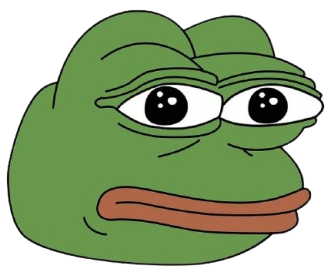
Shut Down...